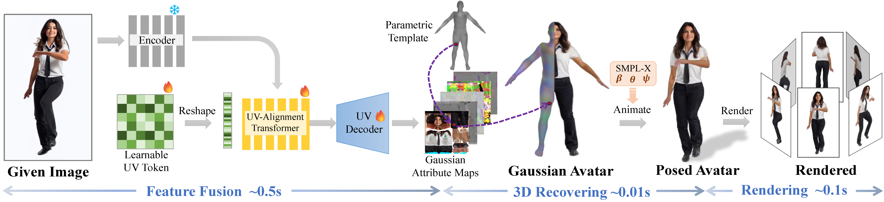

Demo Video
Watch the demo video for a first look at IDOL in action. Experience the impressive capabilities of our method as it brings single images to life, reconstructing photorealistic, animatable 3D humans with remarkable accuracy and detail.
Abstract
This work introduces IDOL, a feed-forward, single-image human reconstruction framework that is fast, high-fidelity, and generalizable. Leveraging a large-scale dataset of 100K multi-view subjects, our method demonstrates exceptional generalizability and robustness in handling diverse human shapes, cross-domain data, severe viewpoints, and occlusions. With a uniform structured representation, the reconstructed avatars are directly animatable and easily editable, providing a significant step forward for various applications in graphics, vision, and beyond.
Introduction
Explore how IDOL redefines single-image 3D human reconstruction. This introductory video presents the method’s core ideas, providing a clear overview of how our framework achieves photorealistic reconstruction, seamless animation/editing, and robust performance across challenging scenarios.
Pipeline
The architecture of IDOL, a fully differentiable transformer-based framework for reconstructing animatable 3D human from a single image. The model integrates a high-resolution encoder and fuses image tokens with learnable UV tokens through the UV-Alignment Transformer. A UV Decoder predicts Gaussian attribute maps as intermediate representations, capturing the human's geometry and appearance in a structured 2D UV space defined by the SMPL-X model. These maps, in conjunction with the SMPL-X model, represent a 3D human avatar in a canonical space, which can be animated using linear blend skinning (LBS). The model is optimized using multi-view images with diverse poses and identities, learning to disentangle pose, appearance, and shape.
Dataset
We introduce a large-scale multi-view human dataset containing over 100K photorealistic subjects for noncommercial research purposes. The dataset supports robust 3D reconstruction tasks and facilitates research advancements in human modeling.
Apply for Dataset Access
To access the dataset, please submit an application using the link below: [Dataset Access]
Animation Results
Given a reference image that provides the target character's identity and a reference video that supplies the pose, our method animates the reconstructed human to match the movements observed in the video.
Using the uniform 3D representation and SMPL-X pose parameters, IDOL achieves precise control over the avatar's pose, including detailed finger movements.
Citation
If you find our work useful, please cite it using the following format:
@article{zhuang2024idolinstant,
title={IDOL: Instant Photorealistic 3D Human Creation from a Single Image},
author={Yiyu Zhuang and Jiaxi Lv and Hao Wen and Qing Shuai and Ailing Zeng and Hao Zhu and Shifeng Chen and Yujiu Yang and Xun Cao and Wei Liu},
journal={arXiv preprint arXiv:2412.14963},
year={2024},
url={https://arxiv.org/abs/2412.14963},
}